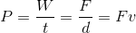
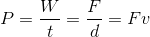

Energy
|
All energy is expressed in units of joules (J or N•m). Kinetic energy, , is the energy possessed stored in the motion of objects. Potential energy, , is the energy possessed by an object based on its position. Mechanical energy is the sum of the kinetic and potential energies in a system: . Mechanical energy is always constant unless an outside force acts on the system (which is pretty much never). Kinetic energy can be calculated simply with . Potential energy though has multiple forms. There’s gravitational potential energy, which is the energy stored in being high up. It’s found with , where  is the object’s height above the ground. Then there’s Elastic potential energy, , is the potential energy associated with elastic devices, such as springs. It’s calculated with , were is the spring constant and is the object’s height above the ground. Then there’s Elastic potential energy, , is the potential energy associated with elastic devices, such as springs. It’s calculated with , were is the spring constant and  is the distance the spring is stretched from equilibrium. is the distance the spring is stretched from equilibrium.Work, , is the process of applying a force through a distance to change the energy of an object. An easier way to think about it is how much kinetic energy you added or took away from an object. The change in kinetic energy is equal to the work. But, for calculating work, it usually ends up being much easier to use , where is the force and is the distance the object moved. This formula actually only works when the force and the distance the object moves is in the same direction. When this isn’t the case you use where is the angle between the applied force and the direction the object actually moved. Note that this means: ◙ Forces perpendicular to displacement do no work. ◙ Work requires a change in position. Work done by gravity just equals . The work done by gravity is negative if the object is lifted, and the work done by gravity is positive if the object falls or is lowered. Another way to find work is by finding The area under the curve of a force vs. displacement graph. Also, as said before, you can calculate work by finding the change in kinetic energy. This also means work equals the change in potential energy multiplied by -1, since a negative change in potential energy causes a positive change in kinetic energy in an isolated system. Lastly, remember that since The centripetal force in circular motion is perpendicular to the velocity and displacement vectors, centripetal force does not do work. Power,  , is the amount of work done over a period of time. The units of power is watts (W). There are many ways to calculate power: . , is the amount of work done over a period of time. The units of power is watts (W). There are many ways to calculate power: .
|